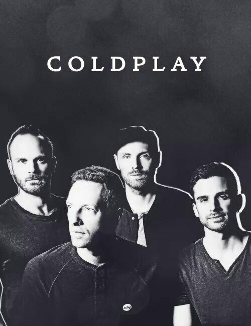
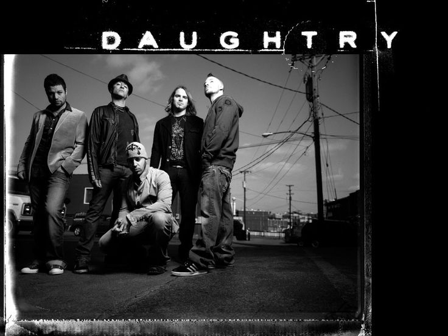
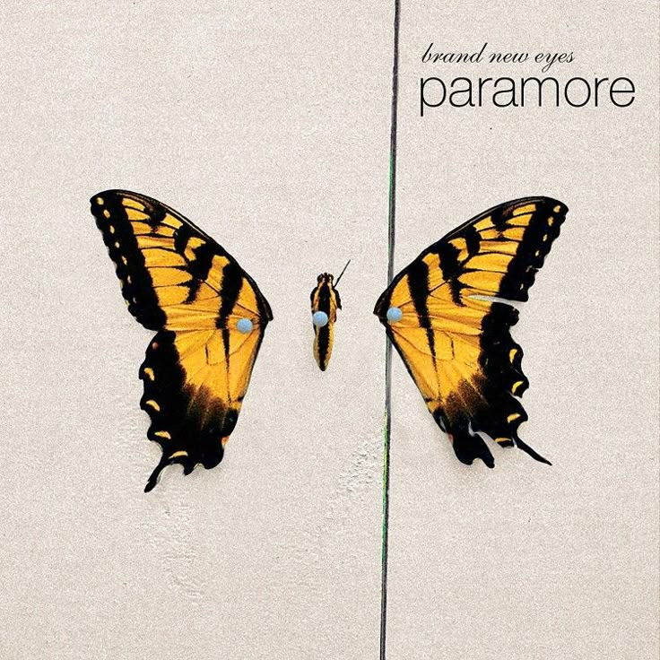

Why Music Matters To Me
Music shapes my mood, fuels my focus, and connects me to memories and emotions. From mellow soft rock to powerful post-grunge anthems, each genre reflects a different part of my personality. This collection represents the soundtracks that define my everyday life.

Soft Rock
Mellow and melodic rock music combining smooth vocals with gentle instrumentation. Perfect for relaxing and late-night listening.
Explore Soft Rock
OPM Alternative Rock
Original Pilipino Music blended with alternative rock vibes. Featuring powerful local bands and culturally inspired sound.
Explore OPM Alt Rock
Post-Grunge
A modern evolution of grunge with strong vocals, heavy riffs, and emotionally charged lyrics emerging in the mid-90s.
Explore Post-Grunge
Pop Hits
Catchy, energetic, and chart-topping songs from different eras — from timeless classics to today's biggest hits.
Explore Pop Hits